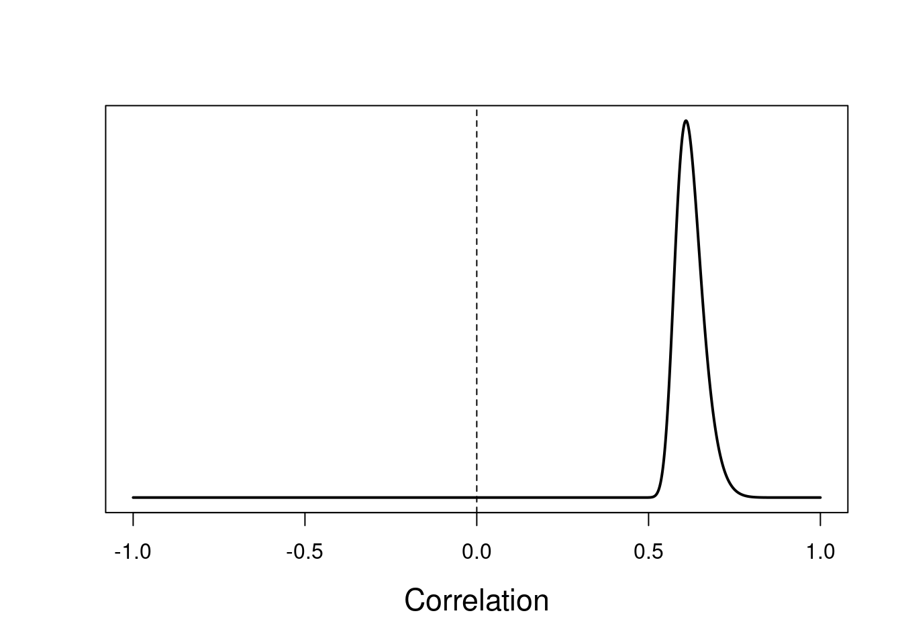
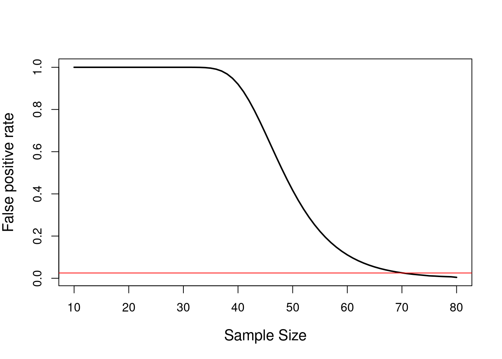

Calibrating surprise in high dimensions
By Corson N. Areshenkoff
May 21, 2018
Most reported results in mass-univariate studies – particularly, fMRI – are, implicitly, order statistics, in the sense that they are selected out of a superset of total comparisons based on some rank ordering of effect size. Most introductory statistics courses restrict themselves to univariate toy examples, and so it’s very difficult to develop any intuition about what constitutes a “surprising” result in this setting. A sure sign that a researcher’s surprisal is miscalibrated is an implicit comparison to an incorrect null – such as in the rule of thumb that a correlation of .5 is “large”.
In a typical mass-univariate setting, we observe a large number of effects – generally treated as if they are independent – and sift out the largest by significance testing, or some other threshold on effect size. The interpretation of the resulting “significant” effects is complicated by the fact that most intuition for what constitutes a “surprising” or “large” effect is developed in the univariate setting, and implicitly (or explicitly, in the case of significance testing) references a baseline of “no effect”, while the filtering over large numbers of effects actually implies a different null model.
Let’s be explicit. Consider a realistic setting in neuroimaging, where we measure pairwise structural connectivity (say, by DTI tractography) between a large number of brain regions. We then want to identify which (if any) connections are correlated with performance on some cognitive task. Searching over all pairs of regions, we find a significant connection which has a correlation of \(r = .5\) with task performance, which is commonly called a “strong” correlation in the social sciences. Is this correlation surprising? Is it actually evidence of anything?
A typical cortical atlas might easily contain upwards of 100 distinct regions, giving upwards of \({100\choose 2} = 4950\) total pairwise connections. What is the strongest correlation we can expect to find in these data? We can actually compute this explicitly given a few assumptions – specifically, that task performance and connection strength are jointly normal for each connection, and that the set of connections are independent (which is slightly more realistic for structural than for functional connectivity).
Suppose that that the true correlation is zero. For a pair of jointly normal, uncorrelated random variables, the sample correlation has density \[ f(r) = \frac{1}{B(\frac{1}{2}, \frac{1}{2}(n-2))} (1-r^2)^{\frac{1}{2}(n-4)} \]
dcor <- function(r, n) {
(1-r^2)^((n-4)/2) / beta(1/2, (n-2)/2)
}where \(n\) is the sample size and \(B\) is the beta function. The cumulative distribution function is then \[\begin{align*} F(r) &= \frac{1}{B(\frac{1}{2}, \frac{1}{2}(n-2))} \int_{-1}^r (1-s^2)^{\frac{1}{2}(n-4)} ds \\ &= \frac{1}{B(\frac{1}{2}, \frac{1}{2}(n-2))} \left ( s _1F_2(\frac{1}{2}, -\frac{1}{2}(n-4);\frac{3}{2},r^2)\right ) \Bigg |_{-1}^r \end{align*}\]
library(hypergeo)
pcor <- function(r, n) {
const <- 1/beta(1/2, (n-2)/2)
upper <- Re(r*hypergeo(1/2, -(n-4)/2, 3/2, r^2))
lower <- Re(-hypergeo(1/2, -(n-4)/2, 3/2, (-1)^2))
return(const * (upper - lower))
}where \(_1F_2\) is the hypergeometric function (note the the hypergeometric function is difficult to evaluate, and hypergeo in particular has difficulty with large sample sizes)
It’s easy to work out the distribution for the maximum order statistics. Given \(k\) independent correlations, the CDF of the maximum is \[ F_\text{max}(r) = F^k(r) \]
pmaxcor <- function(r, n, k) {
pcor(r, n)^k
}and the density is \[ f_\text{max}(r) = kF^{k-1}(r)f(r) \]
dmaxcor <- function(r, n, k) {
k * pcor(r, n)^(k-1) * dcor(r, n)
}According to Turner et al. (2018), the median sample size of an fMRI study published in 2015 was about 28, which we’ll round to 30 for demonstration. For these study parameters
n <- 30
k <- choose(100,2)the distribution of the maximum observed correlation is
r <- seq(-1, 1, .001)
plot(r, dmaxcor(r, n, k), type = 'l',
lwd = 2, cex.lab = 1.4, yaxt = 'n',
xlab = 'Correlation', ylab = '')
abline(v = 0, lty = 2)
So we will essentially always observe a “strong” correlation (\(r \geq .5\)) in this setting. In fact, this happens with probability
1 - pmaxcor(.5, n, k)## [1] 0.9999947when there are no true correlations anywhere. So a “strong” correlation is not only not surprising, it is completely consistent with the idea that there are no effects. Worse, even if there are strong effects, they are intermingled with the effects that can be expected from pure noise.
How large does our sample need to be resolve a large correlation from pure noise? Let’s accept a false positive rate of \(\alpha = .05\) for a two-tailed probability.
n <- seq(10,80,1)
alpha <- .05
p <- 1 - pmaxcor(.5, n, k)
plot(n, p, xlab = 'Sample Size',
ylab = 'False positive rate',
type = 'l', lwd = 2, cex.lab = 1.25)
abline(h = alpha/2, col = 'red')
So the minimum sample size needed to resolve even a large correlation from noise is
n[which.max(p <= alpha/2)]## [1] 71which is more than twice the median sample size reported in the literature, and is not economically feasible for most labs, given the huge expense involved in running an imaging study. Taking the position that large true correlations between imaging data and behavior rarely, if ever, exist – the alternative being that a substantial proportion of the variance in noisy behavioral measurements can be explained by crude, noisy, and indirect summaries of brain structure or function, which seems implausible – this would suggest that almost all mass-univariate, correlation based imaging studies are dead out of the gate, excluding perhaps large, multi-lab collaborations.
References
Turner, B. O., Paul, E. J., Miller, M. B., & Barbey, A. K. (2018). Small sample sizes reduce the replicability of task-based fMRI studies. Communications biology, 1(1), 62.
- Posted on:
- May 21, 2018
- Length:
- 5 minute read, 920 words
- See Also: